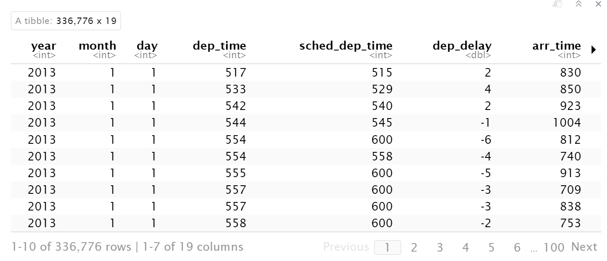

Gerar análises rápidas e ganhar confiança
Este curso é uma introdução a análise de dados, sobretudo para fins de pesquisa nas Ciências Sociais. No fluxo de trabalho mais comum, por exemplo na preparação de um relatório, tese, disertação ou artigo, queremos abrir um banco de dados, limpar e processar os dados, calcular estatísticas, produzir tabelas, gráficos, mapas, ou descrições, e apresentar os resultados num documento final. Através de tutoriais temáticos na linguagem de R, o curso orienta você em cada uma dessas tarefas.
Em cada étapa da análise, salientamos os seguintes princípios que ajudam manter a integridade e confiabilidade da nossa análise:
Programação e análise de dados não acontecem como mostrado nos filmes. Em vez de digitar furiosamente comandos na hora, preparamos um ‘script’ com calma de antemão e só temos que ‘executar’ o nosso script quando tudo está pronto para gerar o nosso produto final.
Em contraste com outras disciplinas, o nosso objetivo geralmente não é apenas executar algum código, mas produzir uma tabela, um gráfico, um relatório, um documento ou um site online. Se separarmos a nossa análise de dados do documento final, temos que copiar e colar as estatísticas, tabelas e gráficos. Nesse processo de copiar e colar sempre fazemos algo errado, ou esquecemos de atualizar alguns números e não outros, ou não podemos rastrear a origem de uma análíse quando queremos ajustá-la. Melhor juntar tudo e integrar a análise de dados com o(s) produto(s) final(is).
Como podemos comunicar a nossa análise de forma profissional, integrada, documentada e reproduzível? Vamos usar o R Markdown: um tipo de script (arquivo) compatível com o RStudio e uma linguagem bem fácil e flexível para formatar documentos.
Antes de criar o nosso script de R Markdown, vamos criar uma pasta no HD da máquina. Para deixar que a análise fique mais fácil no futuro todos os nossos documentos vão ficar nessa pasta. Ela é um ‘Projeto’ de RStudio e nela guardamos todos os nossos arquivos relevantes:
Criamos o nosso projeto/pasta dentro do RStudio: Clique File -> New Project. Depois, "New Directory’ -> New Project e especifique o nome e a localização preferida para a pasta. Quando esse passo a passo é finalizado, a única coisa que muda no RStudio é que a aba/janela ‘Files’ mostra todos os arquivos em nossa pasta.
Ainda temos que gerar o nosso primeiro script de R Markdown: Clique File -> New File -> R Markdown. Escolha ‘documento’ nas opções à esquerda, digite um título e autor, e escolha o formato HTML para o produto (output) final (podemos mudar o formato depois se necessário). Salve o novo script na pasta do seu projeto (que deve abrir como opção padrão (default)).
Ao abrir o arquivo de RMarkdown haverá um conteúdo padrão como exemplo; pode apagar tudo exceto o cabeçalho/‘header’, que parece assim:
---
title: "Exemplo"
author: "Jonathan"
date: "26 de março 2021"
output: html_document
---Fique à vontade alterar o título, autor e data como quiser. Depois do cabeçalho, você pode escrever qualquer coisa em texto normal que vai aparecer no documento final. É como trabalhar em Microsoft Word ou outro editor de texto. Para entender como funciona, escreva numa frase curta o seu motivo para cursar esta disciplina.
Agora temos o nosso primeiro script, e queremos ‘compilar’ ou ‘executar’ o script para gerar o produto final. Em R isso se chama ‘Knit’ e aparece como um ícone azul acima do seu script. Clique em ‘Knit’ e o RStudio vai abrir um documento de formato HTML numa janela separada.
Parabéns! Você já produziu a sua primeira análise! Onde ela fica salva? Procure o documento com extensão HTML na mesma pasta do seu script, a pasta do projeto. Simples, não? Logo, vamos ver como a produzir outros formatos de documentos finais (eg. Word, PDF).
Até agora o nosso documento é muito simples e não incorpora nenhuma análise técnica ou de programação. A melhor característica do R Markdown é que podemos juntar texto simples e programação no mesmo script. Apesar disso, existe uma separação forte e clara entre os dois: deixamos códigos de programação em lugares específicos e demarcados dentro do script - estes lugares se chamam ‘chunks’. Para inserir um chunk, clique no icone verde com um ‘C’ acima do seu script e em seguida ‘R’. No local do seu mouse vai aparecer uma caixa com fundo cinza onde podemos digitar o nosso código de programação:
```{r}
```(No futuro, pode ser mais rápido criar um chunk com Ctrl+Alt+i).
O que inserimos aqui dentro? Em breve, centenas de linhas de código! Tudo que você escrever aqui será processado pela máquina do R e o resultado inserido no documento final.
O R funciona como calculadora, então podemos digitar alguns cálculos dentro do chunk e ver os resultados no documento final:
```{r}
86*74
```[1] 6364O R também permite o armazenamento de valores como ‘objetos’, descritos por um nome. No início do seu cálculo, digite um nome do seu objeto desejado, seguido por uma seta à esquerda ‘<-’, composta por ‘<’ e ‘-’, que significa atribuir o resultado do cálculo a direita ao objeto com nome na esquerda. O objeto calculo fica disponível para o restante do seu script, em todas as linhas e chunks abaixo. A lista de objetos disponíveis no seu ambiente fica na aba ‘Environment’ do RStudio.
```{r}
calculo <- 86*74
calculo/4
```[1] 1591Habilidade Básica de Programação: Atribuição, ‘<-’ Guardamos dados/resultados para o futuro em objetos do R. A lista de objetos disponíveis fica na aba de ‘Environment’ do RStudio, e será limpa toda vez que fechamos o R, ou propositalmente limpamos o ‘Environment’. Para criar objetos, temos que atribuir o resultado de uma função/cálculo a um nome único.
A flecha de atribuição, composto pelos dois símbolos ‘<’ e ‘-’ conecta o nome de objeto e o conteúdo para salvar dentro:
nome_objeto <- 15*72
Que ótimo! Já produzimos o nosso primeiro script de programação! Se compilarmos o script com ‘Knit’, você verá o documento final com o seu texto simples, o código e o resultado da execução do código.
Vamos tentar mais uma análise. Por exemplo, calculamos a área de um círculo de raio 20 com o chunk abaixo, usando a constante pi (que o R já tem salvo como objeto na memória):
```{r}
raio <- 20
area <- pi * raio^2
area
```[1] 1256.637Note que temos que escrever o nome do objeto para que o resultado apareça no documento final. Se não, ele fica apenas salvo no objeto ‘area’ para uso no futuro e seu valor não aparece no nosso documento final de RMarkdown.
Como um resumo, existem dois lugares em nosso script, e temos que lembrar qual tipo de conteúdo fica em cada um:
| Digite no corpo (fundo branco) | Digite num ‘chunk’ (fundo cinza) |
|---|---|
| Texto explicativo | Código de R |
| Títulos | Tabelas criadas com código de R |
| Equações (na sintaxe do Latex) | Gráficos criadas com código de R |
Como tornamos o nosso texto mais interessante e organizado? Em contraste com o Microsoft Word, formatar textos em R Markdown não depende de clicar em botões - precisamos incluir caracteres/símbolos no script para indicar a formatação que queremos. Por exemplo, usamos um asterisco (’*’) antes e depois de uma palavra/frase que queremos destacar em itálicos.
*Itálico*
**Bold**
# Cabeçalho de seção
## Sub-cabeçalho
`
### Sub-Sub-cabeçalho
[link](http://www.google.com)
* Bullets
[quatro espaços] * Sub-Bullets
1. Lista numerada
[quatro espaços] 1. Sub-Lista numerada
Itálico
Bold
Pratique incluindo alguns cabeçalhos e formatações no seu documento, e compile com ‘Knit’ para verificar o resultado. Para mais detalhes veja O Cheatsheet do Rmarkdown.
Podemos escrever equações com a linguagem de Latex (que vamos aprender logo no futuro). Se quiser inserir uma equação dentro de uma frase (na mesma linha), use $equacao$, e para centralizar numa nova linha use $$equacao grande$$. A sintaxe é assim:
$$\alpha^2 + \beta^2 = \chi^2$$ \[\alpha^2 + \beta^2 = \chi^2\]
$$\frac{\sqrt{1}}{2} * \frac{a}{2b} = \frac{a}{4b}$$ \[\frac{\sqrt{1}}{2} * \frac{a}{2b} = \frac{a}{4b}\] $$\sum_0^{10} x = ...$$ \[\sum_0^{10} x = ...\]
Mais detalhes aqui.
Até agora, o nosso script tem dois componentes distintos: texto simples e chunks de código que geram resultados separados no documento final. Às vezes queremos integrar o código ao texto, para fazer referência ao resultado da nossa análise dentro do próprio texto/frase. Por exemplo, podemos querer inserir uma média ou o número de observações do nosso banco de dados dentro de uma frase na sua tese, não de forma manual ou de memória, mas como um valor exato, atualizado e calculado pelo nosso script.
Como incluímos o resultado numérico area do cálculo acima dentro de uma frase em nosso texto (fora do chunk de código)? Podemos usar ‘código em linha’ (‘in-line code’) para exibir um valor simples no documento final. O formato é como o exemplo abaixo, usando o acento grave para começar e terminar, a letra r para mostrar que queremos um cálculo do R, e o nome do objeto que queremos inserir. Você se lembra que já criamos o objeto area acima com o resultado do cálculo da área do círculo? O resultado deve estar ainda disponível se o chunk fica acima.
```{r}
raio <- 20
area <- pi * raio^2
```A área de um círculo de raio 20 é `r area`.
E o resultado:
A área de um círculo de raio 20 é 1256.6370614.
O resultado é totalmente integrada na frase para que ninguém saberá que você não fez o cálculo manualmente! Tente ‘Knit’ o seu documento de novo.
Até agora, trabalhamos com scripts, arquivos .Rmd, e esse é o melhor jeito de organizar as nossas análises e deixá-las prontas e reproduzíveis para um outro pesquisador (ou você mesmo) no futuro.
Porém, é bem difícil pensar no processamento de dados do início até o final sem interrogar os dados em cada passo do processo. Queremos verificar se cada linha de código gera o resultado esperado conforme vamos programando, e não apenas no documento final. Felizmente, o R nos permite trabalhar no modo interativo enquanto preparamos o nosso script. A ideia é que executamos o nosso código linha por linha, e avaliamos o resultado de cada linha para confirmar que o resultado faz sentido.
Isso é indispensável, por exemplo, quando enfrentamos um erro na compilação do nosso script e precisamos diagnosticar o problema.
Há dois jeitos de rodar uma linha de código no modo interativo:
1. Digite o seu código diretamente na janela/aba de ‘Console’ do RStudio, e Enter para executar;
2. Selecione a(s) linha(s) de código dentro do seu script (na verdade apenas precisa deixar o cursor na linha relevante) e toque ‘Run’ em R (botão acima do seu script, do lado direito) ou digite Ctrl+Enter.
Na prática, a nossa recomendação é usar opção (2) quando precisa rodar uma linha de código que já existe no seu script, e opção (1) apenas quando precisa rodar temporariamente uma linha nova, por exemplo para ajudar a inspecionar um objeto.
Experimente rodando o código abaixo em modo interativo:
raio <- 20
area <- pi * raio^2
area
O resultado é impresso na aba/janela de Console, e se usei opção (2), também abaixo do chunk que contém o código. Note que a execução do código por qualquer método gerou o objeto area na janela/aba de ‘Environment’ do RStudio. O Environment armazena todos os objetos que estão disponíveis em modo interativo.
Vamos descrobrir que a ordem de execução de linhas de código é absolutamente crucial para o resultado final. Em modo interativo sempre existe um risco de executar os códigos na ordem errada. É por isso que o modo de script é mais robusto e deixa a ordem da análise clara - ordem da sequência das linhas do script. Se você ficar confuso com quais operações já foram executadas, recomendamos limpar o seu Environment no RStudio clicando na imagem da vassoura na aba de Environment, e comece de novo desde o início.
Uma característica distintiva da linguagem de programação R é ter sido desenvolvida para a análise de dados. E quando pensamos em análise de dados, a protagonista do show é a base de dados ou, como conhecida na programação, data frame.
Por esta razão, em vez de aprender como fazer aritmética, elaborar funções ou executar loops para repetir tarefas e outros aspectos básicos da linguagem, vamos começar olhando para o R como um software concorrente dos demais utilizados para análise de dados em ciências sociais, como SPSS, Stata, SAS, Python e companhia.
As principais características de um data frame são:
| Candidato | Partido | Votos |
|---|---|---|
| Beatriz | PMDB | 350 |
| Danilo | PSOL | 1598 |
| Pedro | PTB | 784 |
| Davi | PSD | 580 |
| Mateus | PV | 2 |
Note que em uma linha os elementos são de tipos diferentes: na primeira coluna há uma nome (texto), na segunda uma sigla de partido (texto, mas limitado a um conjunto de siglas) e na terceira votos (números inteiros).
Por outro lado, em cada coluna há somente elementos de um tipo. Por exemplo, há apenas números inteiros na coluna votos. Colunas são variáveis e por isso aceitam registros de um único tipo, não podemos mesclar informações de tipos diferentes em uma mesma coluna (como texto e data).
Se destacamos uma coluna do nosso data frame, temos um vetor. Por exemplo, a variável “Votos” pode ser apresentada da seguinte maneira: {350, 1598, 784, 580, 2}. Um data frame é um conjunto de variáveis (vetores) dispostos na vertical e combinados um ao lado do outro.
Data frame e vetores são objetos na linguagem R.
Vamos ver como o R representa vetores e data frames na tela. Antes disso, é preciso ‘abrir’ um data frame.
Uma das características mais atrativas da linguagem R é o desenvolvimento de pacotes pela comunidade de usuários. Pacotes são conjuntos de funções (isto é comandos) e, por vezes, guardam também dados em diversos formatos.
Vamos carregar um pacote chamado nycflights13, que contém um conjunto de dados útil para fins didáticos. Existem dois passos para abrir um pacote em R:
install.packages("nycflights13")```{r}
library("nycflights13")
```Habilidade Básica de Programação: Comentários O R vai processar tudo que está no seu script, linha por linha. A única exceção é quando uma linha começa com o símbolo # dentro de um chunk. Isso significa um ‘comentário’, que queremos notar uma coisa para documentar o que estamos fazendo numa linha de código e porque.
Comentários são essenciais para uma programação efetiva. Posso te garantir, você não vai lembrar o motivo para o seu código em alguns meses/anos. Melhor deixar tudo explícito hoje enquanto prepara o código.
Pode usar o atalho Ctrl+Shift+c para comentar a(s) linha(s) selecionada(a) ou a linha na qual o cursor estiver posicionado. (Observe que isso também funciona para texto simples).
# Nota: O uso de comentário abaixo nos permite notar como foi
# instalado o pacote, sem rodar o código
# install.packages('nycflights13')
library("nycflights13")
O pacote nycflights13 contém um banco de dados chamado flights. É literalmente um banco de dados de todos os voos que partiram de Nova Iorque em 2013, e um ótimo exemplo para illustrar os poderes de R.
Logo mais veremos como abrir conjuntos de dados de outras fontes (arquivos de texto, outros softwares, etc), mas já podemos começar a trabalhar com data frames usando flights.
Primeiro, queremos conhecer os dados para saber o que eles descrevem, então trabalhamos em modo interativo. Pode digitar o nome de banco de dados (o objeto) no console e executa-lo com Enter, ou digitar num chunk e executa-lo com ‘Run’ ou Ctrl+Enter:
```{r}
flights
```Os dados aparecem numa tabela interativa abaixo do chunk em que eles foram abertos. Pode descer para ver mais observações ou passar para a direita para ver mais colunas.
flights

Antes de continuar, olhe a tabela de flights e responda às seguintes perguntas:
Estas são questões fundamentais que devem ser o seu ponto de partida para conhecer os seus dados, perguntas críticas para qualquer análise.
O R ajuda a responder as perguntas de várias formas. O número de linhas e colunas está escrito ao final da tabela. Se queremos calcular o número de observações (linhas) e variáveis (colunas) usando um código, podemos pedir assim:
nrow significa o número de linhas, e ncol o número de colunas. Use Ctrl+Enter para rodar interativamente, e/ou deixe no script para que o número de linhas e colunas seja impresso no seu documento final. Isso é bastante útil quando, por exemplo, você quer relatar o número de observações no seu artigo - não precisa lembrar, o R vai calcular e atualizar automaticamente para você!
Habilidade Básica de Programação: Funções e Parênteses Qualquer operação ou transformação em R é uma função que aceita (pelo menos) um insumo (input) e gera um produto (output). Cada função deve ter um nome único (infelizmente, no entanto, duplicações são possíveis e problemáticas). Funções sempre vêm com parênteses depois, e especificamos os insumos nos parênteses, com múltiplos insumos separados por vírgula. Mesmo quando uma função não precisa de inputs, exige parênteses, por exemplo Sys.Date() devolve a data de hoje.
funcao(insumos)
Sys.Date()
[1] "2022-03-30"Como sabemos o significado de algumas colunas com nomes ambíguos? Podemos acessar o help (documentação) do objeto para descobrir uma descrição do que há no data frame chamado flights:
?flightsOs detalhes aparecem na janela/aba ‘Help’. Você pode ler com calma antes de avançar. Se deixarmos o código de help no script, o R vai abrir a página de documentação cada vez que rodarmos o script (knit)! Então temos que operar no modo interativo: o melhor é digitar na aba de Console, ou apagar antes de continuar seu script.
O help funciona para todas as funções de R: Abra o help da função nrow para entender melhor os detalhes da função.
E como podemos saber o tipo de dado de cada variável? Quando executamos o nome de um data frame e ele parece na tabela interativa abaixo de chunk, de novo o R ajuda - debaixo de cada coluna, existe uma descrição, por exemplo <int> ou <chr>. O que isso significa?
Se você já fez um curso de estatística básica ou de métodos quantitativos deve se lembrar que as variáveis são classificadas da seguinte maneira:
1- Discretas
Nominais, que são categorias (normalmente texto) não ordenadas
Ordinais, que são categorias (normalmente texto) ordenadas
Inteiros, ou seja, o conjunto dos números inteiros
2- Contínuas, números que podem assumir valores não inteiros
Estas categorias se traduzem para os tipos de dados de R de acordo com a tabela abaixo:
| Tipo em R | Atalho em Tabela | ||
|---|---|---|---|
| Discreta | Nominal | Fator ou Caracter | fctr, chr |
| Ordinal | Fator ordenado | fctr, chr | |
| Inteiro | Inteiro | int | |
| Contínua | Dobro/Numérico/Real | dbl |
Existem outros tipos também. Por enquanto, podemos deixar o R cuidar dos tipos de dados e não precisamos nos preocupar na geração/transformação de tipos de dados. Quais tipos de dados existem no banco de dados flights?
No próximo tutorial, vamos aprender como importar dados enormes de fontes externas. Na prática, quase todos os objetos com os quais vamos trabalhar são data.frames, e às vezes a informação contida neles é simples, então podemos criá-los na hora.
Uma pequena complicação: neste curso vamos trabalhar com uma variedade de data.frame em R um pouco mais sofisticada - um ‘tibble’. Um tibble é um data.frame, não tem diferença; só que um tibble é mais flexível e melhor formatado em R para facilitar a nossa análise. O banco de dados de flights é um tibble. Se você colocar o cursor em cima do nome de flights no ‘Environment’ (sem clicar) vai ver a informação sobre o tipo de objeto que ele é.
Para usar um tibble, temos que aproveitar o pacote super-útil que se chama tidyverse. Primeiro, temos que instalar o pacote:
install.packages("tidyverse")
Lembre-se de rodar esta linha no Console, ou ‘comentar’ a instalação depois de executar porque só precisamos rodar uma vez por máquina.
Agora que o pacote é instalado, é só chamar com library():
#install.packages("tidyverse")
library("tidyverse")
Vamos ilustrar a criação de um data frame com um exemplo: flights contém apenas as siglas dos aeroportos - Imagine que queremos criar um lembrete dos nomes completos dos aeroportos. Em vez de escrever uma nota física ou anotar num caderno, vamos criar um tibble (um data.frame, uma tabela) em nosso script para documentar a relação entre as siglas e os nomes completos.
Antes de criar um tibble, vamos começar criando um vetor simples apenas com as siglas. Um vetor é um conjunto de elementos, então usamos a função c() (de conjunto ou concatenate) para definir um vetor. Dentro dos parênteses, digitamos os elementos individuais em aspas. Assim:
c("NWR","JFK","LGA")
O que acontece se rodarmos esta linha? Recebemos em resposta o mesmo vetor. Não ajuda muito só imprimir o que a gente acabou de digitar… queremos salvar o nosso vetor como um objeto. Então temos que salvar (usando a seta <-) para um objeto nomeado, ex.:
siglas_aeroportos <- c("NWR","JFK","LGA")
Da mesma maneira podemos gerar um segundo vetor com os nomes completos dos aeroportos na mesma ordem:
nomes_aeroportos <- c("Newark","John F Kennedy","Laguardia")
E agora? O R guardou os dois vetores, mas ele não sabe que o primeiro elemento NWR de siglas_aeroportos é ligado com o primeiro elemento de nomes_aeroportos, e o segundo com o segundo etc. A beleza de um data.frame/tibble é que ele associa os elementos de vários vetores como observações ligadas.
A função que nos permite gerar um tibble, supreendentemente, se chame tibble(). Nos parênteses, colocamos os nomes das variáveis, separadas por vírgulas, e depois o nome do vetor relevante.
tabela_aeroportos <- tibble(Sigla=siglas_aeroportos,
Nome=nomes_aeroportos)
Caso seja mais simples/rápido, não tem problema pular a etapa de definir os vetores separadamente e anteriormente; podemos definir-los diretamente dentro do tibble; o resultado é igual:
| Sigla | Nome |
|---|---|
| NWR | Newark |
| JFK | John F Kennedy |
| LGA | Laguardia |
Agora, podemos rodar o nome de tabela_aeroportos sempre que queremos lembrar, e aparece uma tabela bonita! Ou podemos incluir a tabela no documento final (veja a próxima seção). No futuro, vamos usar isso para várias uniões (joins) entre tibbles em análises mais complexas.
Voltando para o modo de gerar scripts para documentar a nossa análise, como os tibbles aparecem no nosso documento final?
Podemos deixar o nome do tibble num chunk e compilar com Knit? Experimente!
```{r}
tabela_aeroportos
```# A tibble: 3 x 2
Sigla Nome
<chr> <chr>
1 NWR Newark
2 JFK John F Kennedy
3 LGA Laguardia Podemos, sim, mas ele sai feio demais. Vamos ver várias opções no futuro, mas por enquanto podemos pedir para o Rmarkdown produzir tabelas mais bonitas especificando uma opção no cabeçalho do documento.
Vamos especificar o ‘output’ com a opção de ‘df_print: paged’, que é um tipo de formatação de tabela simples mas útil:
---
title: "Examplo"
author: "Jonathan"
date: "19 de fevereiro 2020"
output:
html_document:
df_print: paged
---Tome cuidado com os espaços; o melhor é iniciar uma nova linha depois de ‘output:’ e o cursor já fica no lugar certo. E uma nova linha depois de ‘html_document:’. Se tiver problemas, pode copiar e colar do exemplo acima.
Agora, se usamos o ‘Knit’ para compilar o nosso documento, a tabela sai mais bonita, facilitando a nossa análise:
Tente gerar uma tabela para o banco de dados de flights para experimentar a interatividade da tabela.
```{r}
flights
```A opção de ‘df_print: paged’ funciona quando o formato do nosso documento final é HTML, gerando uma tabela interativa.
Até agora, só produzimos documentos em formato HTML. HTML tem a vantagem de ser simples, flexível e interativo, mas não é comum usar para relatórios. O Rmarkdown facilita a produção de documentos em vários formatos. Um outro é Microsoft Word. E não precisa mudar nada no seu código.
Clique na seta ao lado do ‘Knit’ em RStudio e depois ‘Knit to Word’. Deve aparecer um documento mais familiar em Word.
É isso, já aprendemos como criar relatórios e análises reproduzíveis! Agora faça os exercícios abaixo com calma e pratique o que você tem aprendido.
Exercício 1
gapminder no pacote dslabs. Estes dados descrevem estatísticas resumidas para países do mundo desde 1960.#install.packages("dslabs")
library("dslabs")
gapminder:
Faça com que as respostas 2(a) e 2(b) sejam calculadas automaticamente no relatório usando funções do R e código em linha para inserir as respostas numa frase.
Calcule o valor do número de observações multiplicado pelo número de colunas
gapminder no relatório.gapminder
Verifique que o seu relatório tem título, autor e data corretos, e comentários suficientes para explicar o que faz cada linha de código.
Tente compilar o seu script final para um documento de Word.
Exercício 2: Aprender juntos
Se você conhece uma outra pessoa da turma, compare o seu script de Exercício 1 com o script deles. Quais são as diferenças? Quais delas importam? Como você pode melhorar o seu scipt? Ajuste o seu script para deixa-lo mais limpo e organizado.
Exercício 3: Encontre o erro em todos os códigos abaixo
Q1)
nrow[flights]
nrow(flights)
# Funções exigem parênteses, não colchetes
Q2)
nrou(flights)
nrow(flights)
# R não tem verificador de texto. Erros impedirão o código de rodar
Q3)
v1 <- (“pato”, “cachorro”, “minhoca”, “lagarto”)
v1 <- c("pato", "cachorro", "minhoca", "lagarto")
# Criar um vetor exige a função 'c()'
Q4)
v2 <- c(“1”, “2”, “3”, “4”)
v2 + 42
v2 <- c(1, 2, 3, 4)
v2 + 42
# Não podemos somar um número a um caractere. Se quisermos manter v2
# como variável numérica, precisamos retirar as aspas.
Q5)
v1 <- c(“pato”, “cachorro”, “minhoca”, “lagarto”
v1 <- c("pato", "cachorro", "minhoca", "lagarto")
# Quando esquecemos de fechar os parênteses, o R entende que ainda
# faltam argumentos na função, então não roda.
Q6)
v3 <- c(33 31 40 25 27 40)
v3 <- c(33, 31, 40, 25, 27, 40)
# Seperamos argumentos e dados com vírgula
Q7)
v1 <- c(pato, cachorro, minhoca, lagarto)
v1 <- c("pato", "cachorro", "minhoca", "lagarto")
# Para o R entender que estamos tratando de palavras, precisamos usar
# aspas. Do contrário, o programa irá procurar objetos nomeados de
# pato, cachorro, etc. Como eles não existem nesse caso, não é
# possível formar o vetor
Q8)
v1 -> c(“pato”, “cachorro”, “minhoca”, “lagarto”)
v1 <- c("pato", "cachorro", "minhoca", "lagarto")
# A direção da seta indica onde queremos salvar os resultados
Q9)
v3 <- C(33, 31, 40, 25, 27, 40)
v3 <- c(33, 31, 40, 25, 27, 40)
# R é 'case sensitive'. maiúsculo ou minúsculo é uma distinção
# importante.
Q10)
v1 <- c(“pato”, “cachorro”“,”minhoca“,”lagarto")
v1 <- c("pato", "cachorro", "minhoca", "lagarto")
# Aspas andam sempre em pares. É preciso prestar atenção à ordem
# deles para não deixar o texto de interesse de fora
Q11)
v1 <- c(“pato”, “cachorro”, “minhoca”, “lagarto”)
v4 <- c(33, 31, 40, 25, 27, 40)
myData <- tibble(v1, v4)
Q12)
v1 <- c(“pato”, “cachorro”, “minhoca”, “lagarto”)
v4 <- c(33, 31, 40, 25)
myData <- tibble(v1 = animal, v4 = idade)
Leitura para Tutorial 2
Antes da próxima aula, por favor leia R 4 Data Science, Capítulos 2, 4, 5, 6, 8, 9, 10 e 11